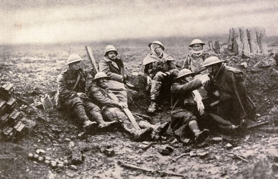

- Reformele lui Gorbaciov – Ajuns la conducerea URSS în 1985, Mihail Gorbaciov a inițiat două reforme majore: „Glasnost" (transparență, deschidere informațională) și „Perestroika" (restructurare economică). Aceste schimbări au slăbit controlul partidului și au creat un val de aspirații democratice în întreg blocul comunist.
- Căderea regimurilor comuniste (1989) – Anul 1989 a marcat prăbușirea sistemului comunist din Europa de Est: Polonia, Ungaria, Cehoslovacia (Revoluția de Catifea), RDG, Bulgaria. În România, regimul Ceaușescu a fost răsturnat printr-o revoluție sângeroasă în decembrie 1989.
- Căderea Zidului Berlinului (9 noiembrie 1989) – Simbolul cel mai puternic al sfârșitului Războiului Rece. În 1990, Germania s-a reunificat. Cortina de Fier a încetat să mai existe.
- Destrămarea URSS (1991) – La 26 decembrie 1991, Uniunea Sovietică s-a dizolvat oficial, dând naștere la 15 state independente. SUA a rămas singura superputere globală, iar lumea a intrat într-o nouă ordine mondială.
- Consecințele de lungă durată – Extinderea NATO și UE spre Est, integrarea fostelor state comuniste în structurile occidentale, dar și conflictele etnice (Iugoslavia, Caucaz). Tehnologic, Războiul Rece a accelerat dezvoltarea informaticii, a internetului și a explorării spațiale.
- Lecțiile istoriei – Războiul Rece a arătat cât de aproape poate fi omenirea de o catastrofă nucleară și cât de important este dialogul diplomatic. Tensiunile actuale dintre marile puteri readuc în atenție multe dintre lecțiile acelei perioade.
